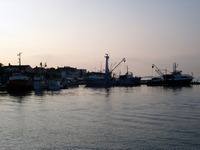
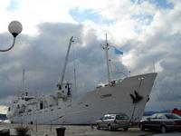
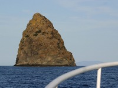
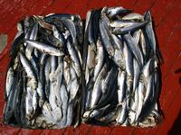
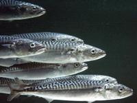
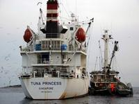

Fotografije
Sjedište Jadran tune
 Naša zgrada
Naša zgrada Unutrašnjost hladnjače 1
Unutrašnjost hladnjače 1 Unutrašnjost hladnjače 2
Unutrašnjost hladnjače 2 Unutrašnjost hladnjače 3
Unutrašnjost hladnjače 3 Unutrašnjost hladnjače 4
Unutrašnjost hladnjače 4 Unutrašnjost hladnjače 5
Unutrašnjost hladnjače 5 Unutrašnjost hladnjače 6
Unutrašnjost hladnjače 6 Unutrašnjost hladnjače 7
Unutrašnjost hladnjače 7 Unutrašnjost hladnjače 8
Unutrašnjost hladnjače 8 Unutrašnjost hladnjače 9
Unutrašnjost hladnjače 9 Vozni park
Vozni park
 Naša zgrada
Naša zgrada Unutrašnjost hladnjače 1
Unutrašnjost hladnjače 1 Unutrašnjost hladnjače 2
Unutrašnjost hladnjače 2 Unutrašnjost hladnjače 3
Unutrašnjost hladnjače 3 Unutrašnjost hladnjače 4
Unutrašnjost hladnjače 4 Unutrašnjost hladnjače 5
Unutrašnjost hladnjače 5 Unutrašnjost hladnjače 6
Unutrašnjost hladnjače 6 Unutrašnjost hladnjače 7
Unutrašnjost hladnjače 7 Unutrašnjost hladnjače 8
Unutrašnjost hladnjače 8 Unutrašnjost hladnjače 9
Unutrašnjost hladnjače 9 Vozni park
Vozni parkFlota
 RB Carica
RB Carica-  Brodovi na vezu
 Moderni ribarski brodovi
Moderni ribarski brodovi RB Kali
RB Kali Ribarice na vezu
Ribarice na vezu Tuljan
Tuljan-  Hladnjača Ledenik
 Kunjka i pomoćni gliser
Kunjka i pomoćni gliser
 RB Carica
RB Carica Moderni ribarski brodovi
Moderni ribarski brodovi RB Kali
RB Kali Ribarice na vezu
Ribarice na vezu Tuljan
Tuljan Kunjka i pomoćni gliser
Kunjka i pomoćni gliserCiklus uzgoja
 Plavoperajna tuna
Plavoperajna tuna Izgled plavoperajne tune
Izgled plavoperajne tune-  Hrid Jabuka
 Tunolov
Tunolov Transport u kavezima
Transport u kavezima Sidrenje kaveza u uzgajalištu
Sidrenje kaveza u uzgajalištu-  Hrana za tunu, haringa
 Hrana za tunu, haringa
Hrana za tunu, haringa Hrana za tunu, haringa
Hrana za tunu, haringa Hrana za tunu, pješčana jeguljica
Hrana za tunu, pješčana jeguljica-  Hrana za tunu, Atlantska lokarda
 Hrana za tunu
Hrana za tunu Hranjenje tune
Hranjenje tune Hranjenje tune
Hranjenje tune Hranjenje tune
Hranjenje tune Hranjenje tune
Hranjenje tune Izlov 2007.
Izlov 2007.-  Transport za Japan
 Plavoperajna tuna
Plavoperajna tuna Izgled plavoperajne tune
Izgled plavoperajne tune Tunolov
Tunolov Transport u kavezima
Transport u kavezima Sidrenje kaveza u uzgajalištu
Sidrenje kaveza u uzgajalištu Hrana za tunu, haringa
Hrana za tunu, haringa Hrana za tunu, haringa
Hrana za tunu, haringa Hrana za tunu, pješčana jeguljica
Hrana za tunu, pješčana jeguljica Hrana za tunu
Hrana za tunu Hranjenje tune
Hranjenje tune Hranjenje tune
Hranjenje tune Hranjenje tune
Hranjenje tune Hranjenje tune
Hranjenje tune Izlov 2007.
Izlov 2007. Meso plavoperajne tune
Meso plavoperajne tune{kind=link}
{kind=link}
{kind=link}
{kind=link}
{kind=link}
{kind=link}
{kind=link}